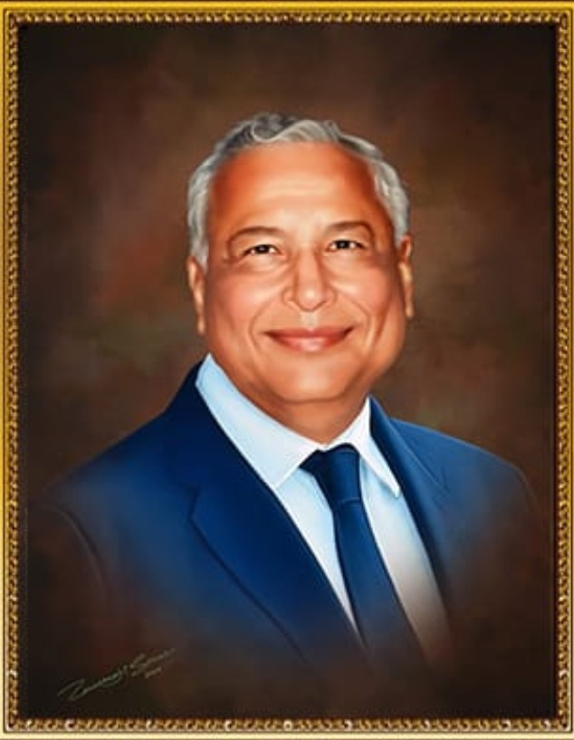

Department of Mechanical Engineering
COEP Technological University, Pune
AR overlays digital content on the real world. VR puts you inside a simulated one. This lab has four headsets, a training workstation and six live projects, from surgery planning to rider safety. Pick any of the four headsets, built from real 3D product models, and take it apart.
Drag the model to turn it. Tap a numbered balloon or a part for its spec. 3D glasses mode renders a red/cyan stereo image, so the parts float off the screen if you wear anaglyph glasses.
3D models via Sketchfab, CC BY 4.0: Meta Quest 3 by ElinHohler · HTC Vive Pro by EternalRealm (the lab's Vive Pro 2 shares its shell) · HoloLens 2 by muertoHambre · Apple Vision Pro by jnanbr07. Taken apart and prepared in Blender.
Pick a row to read its spec sheet. The chart compares all four headsets to scale; hatched bars are the manufacturer's unconfirmed figures.
| Item | Device | Type |
|---|
Compare
Six projects, taken from the lab's own reports. Three of them come with a small working model you can try here.
Each year is one revision of the lab. The red marker shows where we are today.
Five steps to a Centre of Excellence
Five-point initiative programmes
Identify key research titles for IP generation and publications.
Webinars, courses, FDPs and training-of-trainer sessions.
Helping businesses adopt AR and VR.
Strategic partnerships with international institutes.
Hosting a technical conference on AR/VR.
The lab carries the name of a COEP mechanical engineer.

Shri Hirachand Daulat graduated in Mechanical Engineering from COEP in 1955. His children, Dr. Jaldeep and Neeta Daulat, founded this laboratory in his memory, in the department where he studied.
Supported by Shri Mangesh Gandhi, Mechanical Engineering, 1979.
Students, faculty and industry teams are welcome. Details marked in red are still being confirmed.
The same lab, at three levels of immersion.